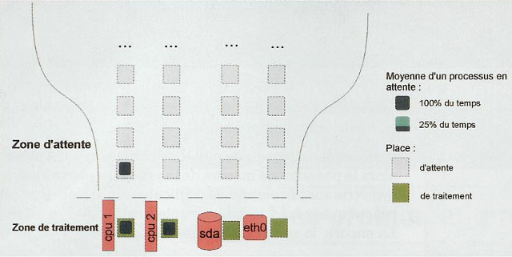
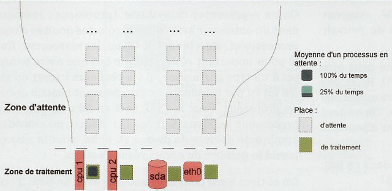
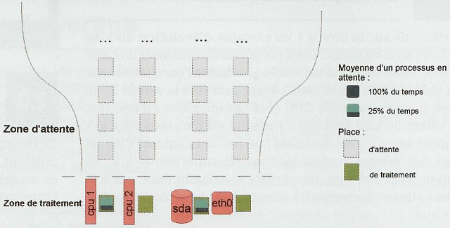

Comprendre le fonctionnement du Load Average
Contents
1 Introduction
Le load average désigne, sous les systèmes UNIX, une moyenne de la charge système, une mesure de la quantité de travail que fait le système durant la période considérée. Celle ci est disponible via la commande top ou uptime.
Pour tout admin sys, il est très important de comprendre le fonctionnement de ce load average afin de savoir comment est l'état de ses serveurs.
Le load Average agit sur ces éléments :
- CPU
- RAM
- Réseau
- Disques
- Nombre de processus
- etc...
Il faut bien comprendre que le Load Average est un indicateur générale du système.
Il va permettre de connaitre rapidement l'état d'un système sans avoir à tout checker à la main. Cependant, il ne nous renseignera pas sur la nature du problème, il faudra régler ça manuellement ou utiliser d'autres outils pour découvrir le problème d'un Load Average élevé.
2 Le Load Average
On peut obtenir le Load Average via la commande Top, uptime ou bien encore dans le fichier /proc/loadavg. Ex :
| |
09:35:44 up 1:13, 2 users, load average: 0.42, 0.27, 0.32 |
Certains mythes subsistent autour de cet indicateur, comme le fait par exemple qu'il doit toujours être inférieur à 1 ou bien inférieur au niveau de CPU disponibles. Mais dans la pratique, vous vous forgerez votre propre opinion.
2.1 Définition
Les 3 chiffres représentent le nombre moyen (au sens d'une moyenne pondérée sur le temps) de processus en état d'exécution ou d'attente d'une ressource au cours des dernières 1, 5 et 15 minutes :
| 1 min | 5 min | 15 min |
|---|---|---|
| 0.42 | 0.27 | 0.32 |
Vu que ce n'est pas évident pour tout le monde, nous allons rappeler quelques notions. Prenez un processus par exemple, il peut :
- Être en cours d'exécution
- Être en attente d'une ressource (CPU ou disque)
- Ne rien faire
Pour le calcul du Load Average, seul les 2 premiers cas seront pris en compte.
Le kernel va régulièrement compter le nombre de processus qui travaillent et mettre à jour ses moyennes. Ce calcul est fait tous les 5*HZ intervalles de temps du kernel. HZ étant une valeur présente dans le kernel qui permet de définir l'unité de temps du système. il est défini comme 1/HZ (valeur par défaut à 100 sur les architectures x86) de secondes.
La mise à jour des variables du load average se faisant toutes les 5*HZ intervalles, ceci donne toutes les 5 secondes. Pour les systèmes de type tickless, c'est toujours valide. Le kernel fournit, à la fonction calculant les moyennes, le nombre de ticks qui se seraient écoulés dans le cas d'un kernel standard.
Intéressons nous maintenant aux moyennes pondérées. Sans entrer dnas les détails, disons que ce mode de calcul permet de donner plus de poids aux dernières valeurs par rapport aux plus anciennes. La décroissance du poinds des anciennes valeurs est en fait exponentiellement décroissante.
2.2 Exemple de courbe
Par exemple, sur la courbe ci dessous, nous voyons l'écolution du load average au fil du temps. 2 processus ont été lancés puis killés.
Nous voyons que les valeurs n'ont pas évolués de la même manière et qu'à des moments, nous sommes même un peu au dessus de 2.
Il est mathématiquement normal que la charge à 1 min est plus réceptive que la charge à 5 et que la charge à 15 (1 < 5 < 15).
Lors du kill des process, le phénomène inverse du boot se produit.
{kind=link}
2.3 Résumé sur la définition du Load Average
En résumé, le load average est le nombre moyen de processus utilisant des ressources ou souhaitant le faire. C'est bien, on en sait un peu plus sur lui, mais on ne sait toujours pas l'interpréter simplement.
3 Une représentation visuelle
Maitenant que l'on sait comment il est calculer, nous allons l'analyser.
Du point de vue d'un processus, une machine peut être vue comme un ensemble de ressources : CPU, RAM, I/O, disques et I/O réseaux. Les processus vont consommer ces différentes ressources afin de jouer leur rôle. On va d'abord éliminer la RAM de ces processus, car elle est en fait contenue dans 2 autres. Soit on :
- Cherche une page en mémoire et dans ce cas, on est dans l'utilisation de la ressource CPU.
- On est en swap et, dans ce cas, on utilise la ressource I/O disque.
On va représenter ce système {processus ; ressources} dans un entonnoir avec, dans le rôle des gouttes d'eau, les processus et, dans le rôle du tuyau, les ressources. Notre entonoir est particulier car il a plusieurs sorties. Un tuyau par ressources pouvant chacun acceuillir un processus.
- Pour le CPU, ceci en fera un pour chaque processeur logique.
- Pour les I/O disque, on considère le nombre de devices et de disques
- Pour le réseau, on prends le nombre de cartes réseaux actives
Pour une machine avec un CPU 2 coeurs, 1 disque et une carte réseau :

Ici le Load average est égale à 3.
{kind=link}
3.1 Machine sous taillée
Dans l'exemple précédent, le load est à 3 (en moyenne 2 processus en exécution et en attente de CPU). Or pour ces processus, on ne dispose que de 2 ressources (les 2 CPU). Il y a donc en permanence un processus qui attends. On peut donc considérer que nous sommes dans une situation de contention sur la ressource CPU, et qu'ici la machine mériterait avoir des CPU supplémentaires.
Attention, la situation si dessus n'est pas forcément problématiques. En effet, imaginons qu'un processus avec une faible priorité est constamment en attente ou presque. Il va faire monter le load average de 1.
Mais en même temps, si sa priorité est basse, c'est que nous le voulions. Est-ce si grave qu'il tourne moins vite ? Après tout les processus qui nous intéressent tournent correctement malgré tout ?!
Donc, ce n'est pas si grave que cela. Tout dépends de la réactivité que nous souhaitons sur ce fameux processus à faible priorité.
3.2 Machine bien taillée

Ici nous avons un load average de 1.
{kind=link}
Si l'on a en moyenne la situation ci dessus, on va avoir un load de 1. On pourrait croire que vu qu'on utilise 1 ressource sur 4, tout va bien, mais ce n'est pas si simple.
Si on analyse : on n'a pas de processus qui attendent, et la ressource CPU est pleinement utilisée, mais les autres pas du tout. On pourrait ce dire que c'est impécable, mais il ne faut pas oublier que le load est une moyenne. Du coup, on ne sait pas si c'est le même processus qui a utilisé tout un CPU ou bien si plusieurs processus ont chacun consommé une partie pour au final prendre toute la ressource en continue.
- Dans le premier cas, on a tout simplement un processus qui consomme tout un CPU. Un CPU plus rapide serait plus adéquate.
- Dans le second cas, vu qu'aucun processus n'a tourné tout le temps, c'est qu'au final le CPU est utilisé à la moitié de sa capacité (il y a 2 ressources CPU et on en a consommé un en moyenne). Est-ce suffisant ? On va voir ça...
On commence à voir qu'une même valeur de load average peut avoir 2 sens totalement différents suivant les applications qui se trouvent sur le système.
3.3 Machine trop taillée ?

Voici ici un load average de 0.5
{kind=link}
Dans ce 3ème cas, on utilise 25% de CPU et 25% d'I/O disque. Là au moins, on a pas la moindre contention, les processus n'attendent pas pour être servis. On a enfin trouvé un cas de load average faible impliquant nécessairement une machine non chargée ? Mummm pas sûr...
4 Temps de réponse des utilisateurs
Si maintenant on se place d'un point de vue utilsateur, le load average peut avoir un côté néfaste.
4.1 Analyse contradictoire
Analysons les 2 cas de figure :
- Load average à 1 avec 1 processus qui consomme toute une ressource (1 coeur)
- Load average à 0.5 avec plusieurs processus qui consomment du CPU et des I/O
On aurait tendance à dire que le 1er cas il faudrait un core de plus et que dans le 2ème cas tout va bien.
Imaginons, que c'est à un jeu que nous jouons où le nombre de FPS (Frame Per Seconds) est idéale à 60 et où il consomme tout un CPU. Dans le 1er cas, on aura toujours le même load de 1 quel que soit le CPU en question, mais avec des situations totalement différentes selon les machines.
Il y a là une relation load average/application. Avec le second cas, imaginons qu'un seul processus soit responsable du load average. 0.5 la minute, ca signifie qu'il n'a travaillé que 30 secondes.
Mais vu qu'il s'agit d'une moyenne, peut être que le programme a fait attendre l'utilisateur presque 30s d'affilé. Peut être que l'utilisateur a demander 60 pages web les unes à la suite des autres et que chacune met 0.5s à arriver.
Si on résume, dans le premier cas, l'utilisateur n'est pas satisfait car il n'a pas forcément ses FPS voulu, et dans le deuxième cas, ça lui est égal, car 0.5s pour chaque pages, c'est amplement suffisant sachant qu'il n'en consultera qu'une à la fois.
4.2 Attentes utilisateurs
Certaines applications tel que les outils de reporting n'ont pas besoin d'avoir un temps de réponse rapide. D'autres au contraire, ne sont pas utilisables si on a pas de bonnes perfs, et ou tout gain supplémentaire peut être inutile (comme des jeux par exemple). Les utilisateurs peuvent avoir des besoins différents selon l'heure de la journée par exemple (comme pour les applications boursières).
Avoir ces informations sur les attentes des utilisateurs est primordiale. Comme l'est autant le fait de pouvoir les comparer avec des valeurs objectives mesurées sur les applications.
L'idéale est de pouvoir définir des scénarios applicatifs, d'avoir les temps de réponse attendus sur ceux-ci et de mesurer les temps réelement observés afin de vérifier s'ils sont ou non dans les marges.
5 Au final
Le load average n'est donc pas une valeur ultime, pouvant dire au premier coup d'oeil si une machine est suffisamment taillée ou non, mais à défaut, d'avoir autre chose, on s'en contentera largement.